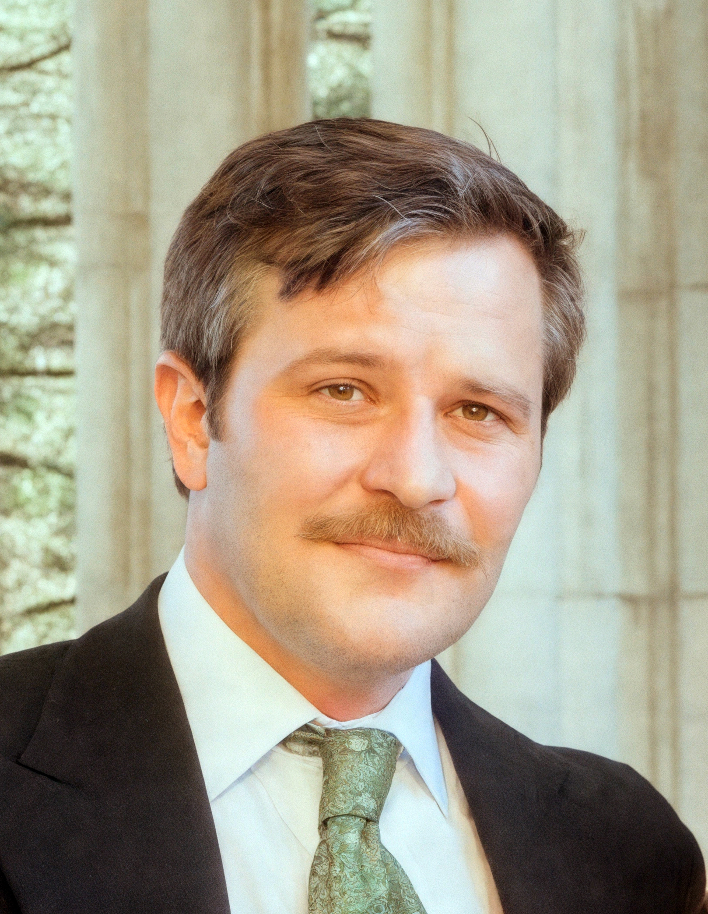

Enthusiasm
An editor must first be a reader. Every manuscript deserves curiosity before judgment.
A good editor is a craftsman rather than a critic.

Over two hundred nonfiction titles edited across history, religion, political thought, sociology, memoir, and cultural criticism.
My work is guided by enthusiasm for language, respect for authorship, and diligence in craft.
An editor must first be a reader. Every manuscript deserves curiosity before judgment.
The author’s voice is sovereign. Editing succeeds when the prose remains unmistakably theirs.
Structure, grammar, citations, consistency, and style. Craft begins where inspiration ends.
Alexander@thistleward.com